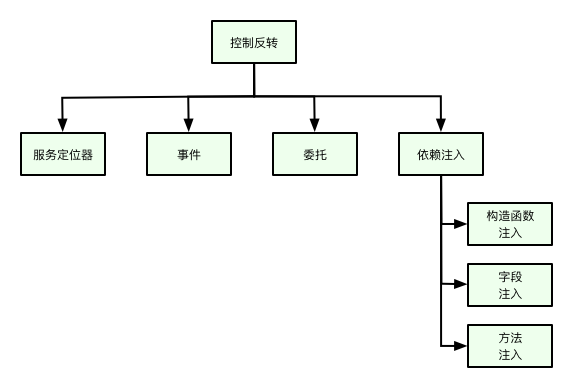

控制反转
简述
控制反转是一种设计思想，适用于任何编程语言。包含了服务定位器(Service Locator)，事件(Events)，委托(Delegates)和依赖注入(Dependency Injection)。到目前为止，Hiboot实现了依赖注入部分，所以我们主要来讲解依赖注入部分。如何编写出松耦合，易维护的应用是Hiboot框架的设计初衷。根据这个设计思想，我们不应该在结构体，函数或方法中静态的配置其依赖，而应该将依赖配置在外部。

依赖注入设计模式允许我们解除应用组件间的强依赖关系，是应用程序松耦合，可扩展和可维护。
Go语言的一个结构体A依赖于另外一个结构体B，如果A用到了B的实例，我们说A依赖B。例如，userController 依赖 userService.
type userController struct {
at.RestController
userService service.UserService
}
func newUserController(userService service.UserService) *userController {
return &userController{
userService: userService,
}
}理想的状况是一个Go语言的结构体应该尽量独立以其它结构体。这样可增加结构体的复用性以及可测试性。
依赖注入
和前面章节一样，我们还是通过示例来说明Hiboot的依赖注入是如何工作的。
⚠️ 注意：
- 如果你想要注入当是一个实例，依赖注入定义的相关字段或参数，其数据类型必须是结构体指针或interface{}. 如果你尝试定义其它类型将不会成功。
- 依赖注入实例的来源主要有两个，一个是通过app.Register()注册结构体构造器，另外一个是通过自动配置的方法注册。
正例：
type Foo struct {
}
func newFoo() *Foo {
return &Foo{}
}
type Bar struct {
foo *Foo
}
func newBar(foo *Foo) *Bar {
return &Bar{
foo: foo,
}
}
func init() {
app.Register(newFoo, newBar)
}反例：
在这个反例中，foo不是一个指针，将不会被注入。
type Foo struct {
}
func newFoo() *Foo {
return &Foo{}
}
type Bar struct {
foo Foo
}
func newBar(foo Foo) *Bar {
return &Bar{
foo: foo,
}
}
func init() {
app.Register(newFoo, newBar)
}构造器注入
Hiboot建议使用构造器来注入，因为构造器注入能够保证注入的组件不可变，并且确保需要的依赖不为空。并且，构造器注入的依赖总数能够保证组件完全初始化的状态。
- 使用构造器注入的字段可以是私有的，不像字段注入，Go语言要求使用标签时，字段必须大写开头，这样就暴露了该字段，这就有被更改的风险。
通过构造器注入Hiboot可以保证依赖不会为空。
package main import ( "hidevops.io/hiboot/pkg/app/web" "hidevops.io/hiboot/pkg/model" "hidevops.io/hiboot/pkg/starter/jwt" "time" ) // This example shows that jwtToken is injected through the constructor, // once you imported "hidevops.io/hiboot/pkg/starter/jwt", // jwtToken jwt.Token will be injectable. func main() { // the web application entry web.NewApplication().Run() } // PATH: /login type loginController struct { at.RestController token jwt.Token } type userRequest struct { // embedded field model.RequestBody mark that userRequest is request body model.RequestBody Username string `json:"username" validate:"required"` Password string `json:"password" validate:"required"` } func init() { // Register Rest Controller through constructor newLoginController app.Register(newLoginController) } // newLoginController inject jwtToken through the argument jwtToken jwt.Token on constructor // the dependency jwtToken is auto configured in jwt starter, see https://hidevops.io/hiboot/pkg/starter/jwt func newLoginController(token jwt.Token) *loginController { return &loginController{ token: token, } } // Post / // The first word of method is the http method POST, the rest is the context mapping func (c *loginController) Post(request *userRequest) (response model.Response, err error) { jwtToken, _ := c.token.Generate(jwt.Map{ "username": request.Username, "password": request.Password, }, 30, time.Minute) response = new(model.BaseResponse) response.SetData(jwtToken) return }
字段注入
我们来将上面这段代码做个些的改动（⚠️ 我们将 token 改成了 Token， 这是因为Go语言定义了标签的字段必须是大写字母开头的，也就是对外公开），不用构造器也是可以注入的。Hiboot通过标签注入实例到字段 Token 中, 尽管使用的效果和构造器差不多，但是我们还是建议使用构造器来注入，原因在上面有说明。
package main
import (
"hidevops.io/hiboot/pkg/app/web"
"hidevops.io/hiboot/pkg/model"
"hidevops.io/hiboot/pkg/starter/jwt"
"time"
)
// This example shows that jwtToken is injected through the constructor,
// once you imported "hidevops.io/hiboot/pkg/starter/jwt",
// jwtToken jwt.Token will be injectable.
func main() {
// the web application entry
web.NewApplication().Run()
}
// PATH: /login
type loginController struct {
at.RestController
// Inject Token by tag `inject:""`
Token jwt.Token `inject:""`
}
type userRequest struct {
// embedded field model.RequestBody mark that userRequest is request body
model.RequestBody
Username string `json:"username" validate:"required"`
Password string `json:"password" validate:"required"`
}
func init() {
// Register Rest Controller through constructor newLoginController
app.Register(newLoginController)
}
// newLoginController inject jwtToken through the argument jwtToken jwt.Token on constructor
// the dependency jwtToken is auto configured in jwt starter, see https://hidevops.io/hiboot/pkg/starter/jwt
func newLoginController() *loginController {
return &loginController{}
}
// Post /
// The first word of method is the http method POST, the rest is the context mapping
func (c *loginController) Post(request *userRequest) (response model.Response, err error) {
// c.Token 是通过 inject 标签注入的，可以直接使用
jwtToken, _ := c.Token.Generate(jwt.Map{
"username": request.Username,
"password": request.Password,
}, 30, time.Minute)
response = new(model.BaseResponse)
response.SetData(jwtToken)
return
}Hiboot字段注入是通过标签`inject:“”`来实现到。当在某个字段标注了`inject:“”`，Hiboot会尝试找到相应的实例并且注入到字段中，如果你尝试让Hiboot注入一个不存在的依赖项，Hiboot会在应用启动时报告错误。
如果需要注入的依赖有多个实现，则可以指定名称，比如`inject:“buzService”`， Hiboot会先寻找标签当名字，如果该实例不存在则会寻找是否有以该字段名命名当实例，最后才寻找以该字段数据类型命名当实例。
type BxzService interface {
GetNickname() string
}
type bazService struct {
Name string
nickname string
}
func (s *bazService) GetNickname() string {
return s.nickname
}
type buzService struct {
Name string
nickname string
}
func (s *buzService) GetNickname() string {
return s.nickname
}
type bxzServiceImpl struct {
BxzService
Name string
nickname string
}
func (s *bxzServiceImpl) GetNickname() string {
return s.nickname
}
type dependencyInjectionTestService struct {
BxzSvc BxzService `inject:""`
BazService BxzService `inject:""`
BuzService BxzService `inject:""`
BozService BxzService `inject:"buzService"`
name string
}方法注入
方法注入是Hiboot的一大特点，下面是Hiboot starter jwt的实际代码。在方法Middleware()中依赖了Token，Hiboot会自动将Token实例注入到Middleware()方法的参数jwtToken Token。
关于Hiboot starter会在后面章节详细讲解。
// Package jwt provides the hiboot starter for injectable jwt dependency
package jwt
import (
"github.com/dgrijalva/jwt-go"
"hidevops.io/hiboot/pkg/app"
mw "github.com/iris-contrib/middleware/jwt"
)
type configuration struct {
app.Configuration
Properties Properties `mapstructure:"jwt"`
middleware *Middleware
token Token
}
func init() {
app.Register(newConfiguration)
}
func newConfiguration() *configuration {
return &configuration{}
}
// Middleware is the jwt handler
func (c *configuration) Middleware(jwtToken Token) *Middleware {
return NewJwtMiddleware(mw.Config{
ValidationKeyGetter: func(token *jwt.Token) (interface{}, error) {
//log.Debug(token)
return jwtToken.VerifyKey(), nil
},
// When set, the middleware verifies that tokens are signed with the specific signing algorithm
// If the signing method is not constant the ValidationKeyGetter callback can be used to implement additional checks
// Important to avoid security issues described here: https://auth0.com/blog/2015/03/31/critical-vulnerabilities-in-json-web-token-libraries/
SigningMethod: jwt.SigningMethodRS256,
})
}
// Token
func (c *configuration) Token() Token {
t := new(jwtToken)
t.Initialize(&c.Properties)
return t
}